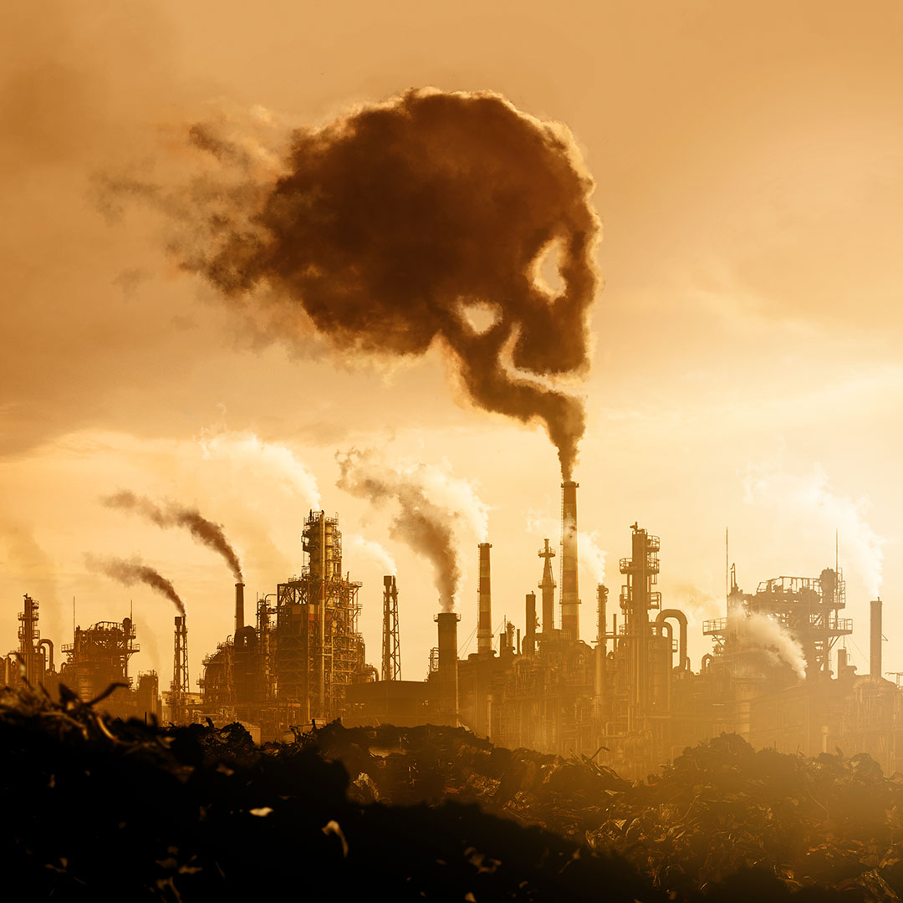

Erosion
El uso intensivo de la tierra y los métodos agrícolas que aumentan la erosión,
junto con la deforestación y el pastoreo excesivo, son responsables de acelerar
la pérdida de suelo. Además, en algunas partes del mundo se espera que el cambio
climático aumente aún más la cantidad de precipitación que erosionará el suelo.
Contaminacion
Los agentes contaminantes pueden ser físicos, químicos o biológicos y perjudican medios como el agua, el suelo o el aire cuando se presentan en concentraciones muy elevadas. Estos compuestos alternan las condiciones de los organismos que habitan en ellos, generando problemas de salud o de seguridad, malestar e incluso la muerte.
Esto ocurre con la contaminación atmosférica. El aire que respiramos está compuesto, de manera natural, por nitrógeno, oxígeno y otros gases que producen el efecto invernadero, como el dióxido de carbono CC0 Public Domain. Sin embargo, con la aparición de las fábricas y de vehículos que funcionan con motores de combustión, se han aumentado las emisiones de monóxido de carbono y los óxidos de azufre por la quema de energías fósiles como la gasolina (que se deriva del petróleo), el gas o el carbón.
Estos componentes naturalmente no deberían estar en la atmósfera en tan elevadas concentraciones y por eso se puede decir que el aire está contaminado, o que el efecto invernadero se esté convirtiendo en un problema porque el planeta se está calentando más de lo normal. De hecho, si por un tiempo prolongado un ser vivo respira aire con un alto contenido de estas sustancias puede morir por envenenamiento.